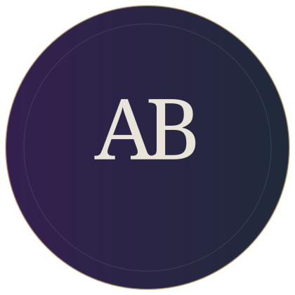

Aquire
An AI-focused productivity and collaboration platform, exploring how intelligent tools can make focused work easier.
AIProductivityCollaboration
B.TECH · AI & MACHINE LEARNING
I’m Aditya Bisht, a student exploring AI, software development, and practical ways to solve real problems.

SELECTED PROJECTS
A few directions where technology, people, and useful ideas meet.
An AI-focused productivity and collaboration platform, exploring how intelligent tools can make focused work easier.
A student blockchain community centered on learning, sharing ideas, and exploring blockchain technology together.
A farmer-to-buyer platform exploring a more direct path from growers to the people who purchase their produce.
These are project explorations. The page will be updated as more confirmed details become available.
A LITTLE ABOUT ME
I’m a B.Tech student specializing in Artificial Intelligence & Machine Learning at Vivekananda Institute of Professional Studies – Technical Campus. I’m building my skills through hands-on projects, workshops, and continuous learning.
My current learning areas include Python, AI and machine learning, web development, and generative AI. I’m especially interested in turning new concepts into practical solutions.
View this portfolio on GitHubLEARNING IN PUBLIC
Recent milestones and ongoing problem-solving practice.
OPEN TO LEARNING & COLLABORATION